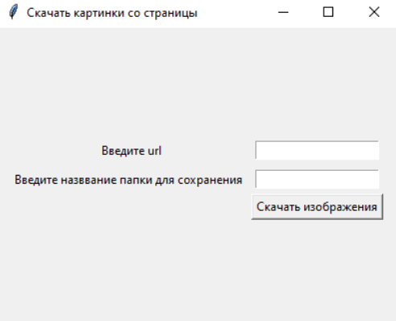

-
Источник
Разработка оконного интерфейса для организация хранилища для набора данных по компьютерному зрению для распознавания клубней картофеля производилась в рамках лабораторной работы по дисциплине "Хранилища данных" в 8 семестре бакалавриата (первая половина 2023 года).После ознакомления с материалами лабораторной работы была сформулирована проблема: необходимо разработать информационную систему для обработки изображений с целью дальнейшего использования этих данных для обучения распознаванию клубней картофеля. -
Цель и задачи
В соответствии со сфомулорованной проблемой была поставлена цель: разработка интерфейса для обучения распознаванию клубней картофеля и их поиска на изображении.В качестве задач к интерфейсу были предъявлены следующие требования:
— Автоматическое скачивание изображений с веб-страницы.
— Распределение изображений на условно "хорошие" и "плохие" и добавление координат объектов (клубней) на "хороших" файлах в базу данных.
— Создание датасета из отобранных изображений и необходимых координат объектов, состоящего из папок Good и Bad и файлов Good.dat и Bad.dat.
— Обучение за счёт создания каскадного классификатора Хаара с помощью библиотеки алгоритмов компьютерного зрения OpenCV.
— Применение полученного классификатора на практике и обработка изображения для обнаружения на нём клубня картофеля. -
Методы
Реляционная база данных
Каскад Хаара (способ обнаружения объектов на изображении) -
Инструменты
PhpMyAdmin (работа с базой данных)
OpenCV (библиотека алгоритмов компьютерного зрения, обработки изображений и численных алгоритмов общего назначения для обучения распознаванию объектов)
Язык программирования Python и его библиотеки:
Pillow
os
Requests
BeautifulSoup4
Tkinter
Subprocess
PyMySQL
Matplotlib
cv2
-
Результат
Результатом разработки стал оконный интерфейс, состоящий из 6 окон:
— главное меню
— окно для скачивания картинок
— окно для изменения размера картинок в папке
— окно для фильтрации изображений на "хорошие" и "плохие"
— окно для формирования необходимых для обучения данных и запуска обучения
— окно поиска объекта (клубня) на избражении. -
Перейти на страницу проекта в GitHub (ссылка)
-
Описание
Для выполнения каждой задачи было создано отдельное окно, чтобы пользователю было удобно. Однако запускать каждый файл по отдельности неудобно, поэтому было добавлено "Главное меню" (файл main_window.py), которое позволяет без проблем переключаться между подпрограммами для различных задач. Главное меню предсталено на изображении справа.Реализация интерфейса для поиска на веб-странице изображений и скачивания их находится слева. Для скачивания изображений в папку необходимо запросить у пользователя адрес веб-страницы, с которой будут загружены изображения, и название папки, в которой они должны будут храниться. Для удобства папка будет добавляться в директорию самой программы. Все операции будут осуществляться по клику на одну кнопку.Чем меньше размер изображения, тем меньше размер файла и тем быстрее оно будет обрабатываться. Чтобы уменьшить все изображения до 100 пискселей в ширину, было создано отдельное окно, которое можно видеть справа. Интерфейс окна состоит из поля ввода названия папки и подписи к нему и кнопки запуска уменьшения изображений в папке. Стоит отметить, что даже если ширина изображения меньше 100, оно не изменяется, но засчитывается, так как оно, можно сказать, уже обработано. Информация о «плохих» и «хороших» файлах и координатах расположения клубней на «хороших» изображениях хранится в реляционной базе данных, так как данные имеют чёткую структуру. У «плохих» файлов хранятся только директория и название, у «хороших», помимо названия файла и папки, — координаты прямоугольников, в которых расположены клубни. В базе данных «плохие» и «хорошие» файлы разделны по разным таблицам, к «хорошим» файлам добавлена зависимая таблица координат. Работа с базой производилась в СУБД MySQL. Структура реализованной в выбранной СУБД базы данных представлена в описании проекта на GitHub.Окно для фильтрации файлов с изображениями размещено ниже. Для начала обработки необходимо ввести название папки. Нажатие на кнопку «Все файлы в этой папке "плохие"» добавляет в базу данных в таблицу bads директорию и названия файлов и выводится сообщение о количестве добавленных "плохих" файлов и общем количестве "плохих" файлов в базе данных, что также означает окончание работы функции. Кнопка «На этих файлах изображены только клубни, и только по одному» позволяет быстро записать файлы, содержащие изображения только одного клубня. Все айлы записываются в таблицу goods и с координатами одного прямоугольника, левая верхняя точка которого (0,0), а правая нижняя — (ширина, высота). Если не все файлы папки только «хорошие» или только «плохие» или на «хороших» изображениях присутствует по несколько объектов, то используется функция кнопки «Файлы этой папки нуждаются в проверке». Тогда вместо стартового изображения (пустая комната), выводится первое изображения указанной папки. Если выведенное изображение является «плохим», то следует использовать кнопку «Это изображение "плохое"». Если изображение не нуждается в обработке и является «хорошим», тогда используется кнопка «Картинка содержит только один клубень», которая добавляет "хороший" файл и координаты к нему. Если изображение в принципе не подходит для выборки или нужно переключить на следующее в папке изображение, используется кнопка «След. картинка». Чтобы обозначить на изображении несколько объектов, для начала нужно нажать на кнопку «На этой картинке несколько клубней», которая запишет в таблицу goods данные файла. Далее выделяется объект с помощью прямоугольника, а потом необходимо нажать на кнопку «Запомнить координаты объекта», которая добавит координаты объекта в базу данных.Окно "Формирование данных" (изображение слева) содержит одну кнопку «Запустить формирование данных для обучения», после клика по которой происходит копирование файлов из директорий, указанных в базе, в директорию Bad «плохих» и директорию Good «хороших» под новыми названиями, чтобы не возникало проблем с тем, что названия фалов одинаковые. А также формируется файл Bad.dat, в котором указываются только путь (Bad) и название «плохих» файлов, и Good.dat, в котром помимо пути (Good) и названия первым числом указывается количество элементов на изображении, затем их координаты подряд через пробел, без отделения каждого прямоугольника. Также по окончании копирования всех файлов по папкам Good и Bad и формирования соответствующих файлов выводится уведомление.Для формирования файла-каскада, которое будет использоваться для обнаружения клубней нужно привести положительные изображения к одному формату, после чего можно будет запускать команду для запуска обучения. В общем интерфейс окна обучения состоит из двух кнопок, что видно снизу слева. После завершения процедуры приведения положительных файлов к общему формату формируется файл samples.vec. Для запуска обучения необходимо создать папку haarcascade и нажать на кнопку "Создать итоговый каскад". После создания каскада выводится уведомление о его успешном создании и времени, затраченном на обучение (изображение снизу справа). Для обучения программы распознаванию клубней картофеля из маленькой выборки состоящей их 22 положительных и 330 негативных потребовалось больше 6 часов.Поиск объекта на изображении осуществляется путём ввода в поле названия файла и нажатия на кнопку, что можно видеть справа. Если на картинке будет найден объект, то на экран выведется изображение с выделенным клубнем, иначе — уведомление о том, что клубни не найдены. В данном проектк использовалось мало изображений, их нужно хотя бы несколько сотен. Также для ускорения работы изображения были маленькими. Поэтому полученный каскад практически не обучен распознаванию клубней. Однако цель состояла не в том, чтобы точно идентифицировать клубни, а в разработке системы, которая позволит быстро обрабатывать изображения для возможности работы с библиотекой OpenCV.
Информация о «плохих» и «хороших» файлах и координатах расположения клубней на «хороших» изображениях хранится в реляционной базе данных, так как данные имеют чёткую структуру. У «плохих» файлов хранятся только директория и название, у «хороших», помимо названия файла и папки, — координаты прямоугольников, в которых расположены клубни. В базе данных «плохие» и «хорошие» файлы разделны по разным таблицам, к «хорошим» файлам добавлена зависимая таблица координат. Работа с базой производилась в СУБД MySQL. Структура реализованной в выбранной СУБД базы данных представлена в описании проекта на GitHub.Окно для фильтрации файлов с изображениями размещено ниже. Для начала обработки необходимо ввести название папки. Нажатие на кнопку «Все файлы в этой папке "плохие"» добавляет в базу данных в таблицу bads директорию и названия файлов и выводится сообщение о количестве добавленных "плохих" файлов и общем количестве "плохих" файлов в базе данных, что также означает окончание работы функции. Кнопка «На этих файлах изображены только клубни, и только по одному» позволяет быстро записать файлы, содержащие изображения только одного клубня. Все айлы записываются в таблицу goods и с координатами одного прямоугольника, левая верхняя точка которого (0,0), а правая нижняя — (ширина, высота). Если не все файлы папки только «хорошие» или только «плохие» или на «хороших» изображениях присутствует по несколько объектов, то используется функция кнопки «Файлы этой папки нуждаются в проверке». Тогда вместо стартового изображения (пустая комната), выводится первое изображения указанной папки. Если выведенное изображение является «плохим», то следует использовать кнопку «Это изображение "плохое"». Если изображение не нуждается в обработке и является «хорошим», тогда используется кнопка «Картинка содержит только один клубень», которая добавляет "хороший" файл и координаты к нему. Если изображение в принципе не подходит для выборки или нужно переключить на следующее в папке изображение, используется кнопка «След. картинка». Чтобы обозначить на изображении несколько объектов, для начала нужно нажать на кнопку «На этой картинке несколько клубней», которая запишет в таблицу goods данные файла. Далее выделяется объект с помощью прямоугольника, а потом необходимо нажать на кнопку «Запомнить координаты объекта», которая добавит координаты объекта в базу данных.Окно "Формирование данных" (изображение слева) содержит одну кнопку «Запустить формирование данных для обучения», после клика по которой происходит копирование файлов из директорий, указанных в базе, в директорию Bad «плохих» и директорию Good «хороших» под новыми названиями, чтобы не возникало проблем с тем, что названия фалов одинаковые. А также формируется файл Bad.dat, в котором указываются только путь (Bad) и название «плохих» файлов, и Good.dat, в котром помимо пути (Good) и названия первым числом указывается количество элементов на изображении, затем их координаты подряд через пробел, без отделения каждого прямоугольника. Также по окончании копирования всех файлов по папкам Good и Bad и формирования соответствующих файлов выводится уведомление.Для формирования файла-каскада, которое будет использоваться для обнаружения клубней нужно привести положительные изображения к одному формату, после чего можно будет запускать команду для запуска обучения. В общем интерфейс окна обучения состоит из двух кнопок, что видно снизу слева. После завершения процедуры приведения положительных файлов к общему формату формируется файл samples.vec. Для запуска обучения необходимо создать папку haarcascade и нажать на кнопку "Создать итоговый каскад". После создания каскада выводится уведомление о его успешном создании и времени, затраченном на обучение (изображение снизу справа). Для обучения программы распознаванию клубней картофеля из маленькой выборки состоящей их 22 положительных и 330 негативных потребовалось больше 6 часов.Поиск объекта на изображении осуществляется путём ввода в поле названия файла и нажатия на кнопку, что можно видеть справа. Если на картинке будет найден объект, то на экран выведется изображение с выделенным клубнем, иначе — уведомление о том, что клубни не найдены. В данном проектк использовалось мало изображений, их нужно хотя бы несколько сотен. Также для ускорения работы изображения были маленькими. Поэтому полученный каскад практически не обучен распознаванию клубней. Однако цель состояла не в том, чтобы точно идентифицировать клубни, а в разработке системы, которая позволит быстро обрабатывать изображения для возможности работы с библиотекой OpenCV.